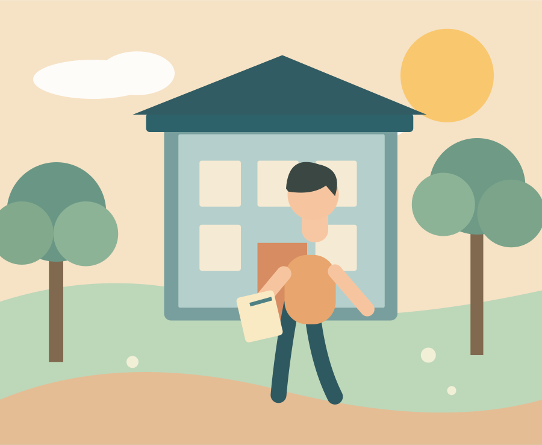

MY DIGITAL GUIDE / 2026
大學生活，
從這裡開始。
上大學很自由，也有很多事情要自己安排。這份簡單的指南，幫你把課業、吃飯和生活節奏慢慢整理好。
為剛進大學、想建立自己步調的你準備。

LEARN · EAT · EXPLORE
EXPLORE YOUR CAMPUS LIFE
四個方向，準備好你的大學生活
不知道先做什麼？從你現在最需要的主題開始。
- 確認課表記下上課時間、教室與老師的規定。
- 熟悉校園找找圖書館、餐廳、行政處室的位置。
- 記錄截止日把作業、考試、選課時間放進行事曆。
- 留給自己休息除了讀書，也要安排吃飯、運動與睡眠。